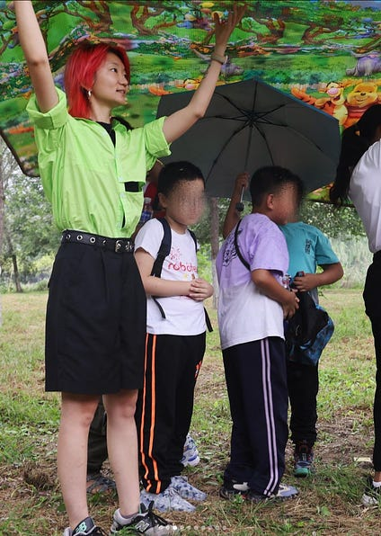
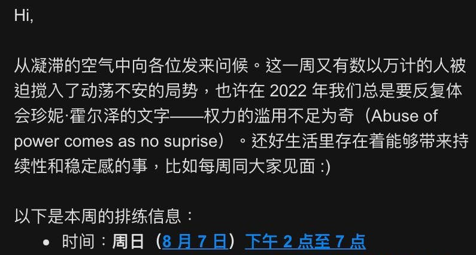
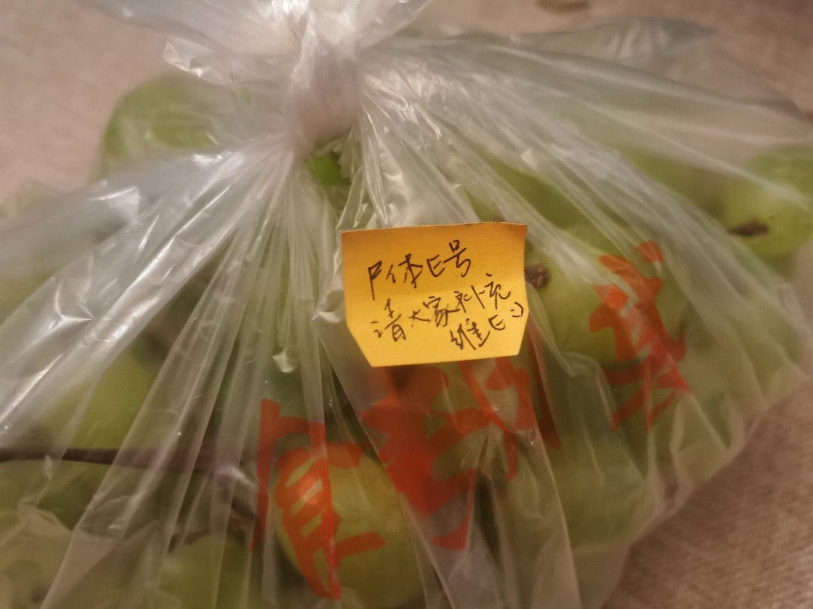
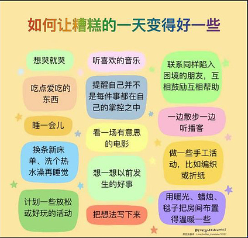
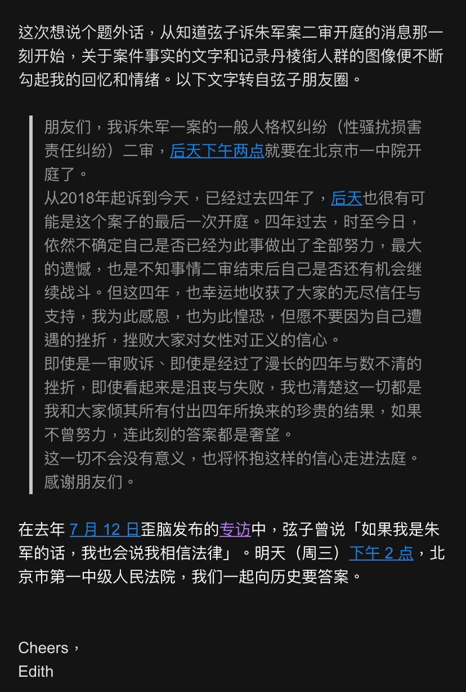

“Keep Fighting the Good Fight”：Women Arrested Before the White Paper Movement
“She wishes for those invisible pains to be seen and marginalized voices heard, for everyone is important.”
“Keep Fighting the Good Fight”：Women Arrested Before the White Paper Movement
Thanks for reading WOMEN我们's Substack! Subscribe for free to receive new posts and support my work.
Written by Wenxin
Edited by Xueshan
Translated by S
Guo Yi's friend S approached us after reading Guo Yi's story and offered to do something for her with volunteer translation work. Thus we have this English version of the piece. You can also join us to make the stories of the Chinese protesters more visible. We also welcome more friends of the victims to write about the stories of those who are currently unknown to the public, and help them to garner more support.
郭艺的故事让她的朋友S找到了我们，提出用志愿翻译的工作来为她做些什么。因此我们有了这篇英文稿件。如果您有兴趣，也可以加入我们，让更多人看见中国抗议者的故事。也欢迎更多的受难者的友人，写出那些目前还不为人知的受难者的故事，帮助Ta们争取更多人的支持。
Guo Yi – close friends know her as Edith – was the name whispered when she was arrested three months ago for putting up posters in a public bathroom with slogans proposed by the Sitong Bridge protestor Peng Zaizhou（彭载舟）.
Her disappearance was hard to go unnoticed in the small, female-dominated artistic community in Beijing, yet her arrest has been virtually unknown to the rest of the world for three months.
Some people first noticed "a person with a cool profile picture" when she was recruiting actors for the feminist play "Our Vagina, Ourselves（阴道之道, Performing stories in Chinese contexts based on the structure of The Vagina Monologues by Eve Ensler）" in various WeChat groups.
That was Edith, the coordinator of the production. Her avatar had a purple background, depicting a girl wearing sunglasses with colorful hair. When she was seen in person, she had short red hair, a lean body, and was smartly dressed in a strapped tank top. She danced and was a member of the Tsinghua International Standard Dancing Team. She could teach others and had participated in many large competitions. A friend described her as "a swan that looks like she could carry the weight of the world with grace."
She disappeared in late October, 2022. At the time, the youth protest movement known as the "White Paper Revolution" had not yet started. She made her decision alone, influenced by the courage of the Sitong Bridge protestor Peng Zaizhou（彭载舟）.
There was no foreshadowing of her actions. Life was busy as usual before her disappearance. Even during the Zero-COVID lockdowns, she was constantly making calls to recruit volunteers for a photography workshop for female migrant workers, organized by the NGO, MuLanHuaKai, where she worked. Some people had not yet received their interview results when she disappeared forever.
Her friends last saw her at a screening event held in her home at the end of the National Day holiday. They watched A Grin Without a Cat (Le fond de l'air est rouge in French, or “The essence of the air is red.”). Everyone felt that something was about to happen, but no one knew what Edith would do.

Photo: Guo Yi's job is to help migrant women and children with cultural activities
Coordinator of the production
In a group united solely by interest, people actually knew surprisingly little of one another's personal lives. They knew that Edith had graduated from Tsinghua around 2019 and apparently studied management, but chose to be a social worker for Mulanhua-Kai after graduation, organizing cultural activities for migrant workers.
Most people don't know that, as a Han Chinese with a household registered in Xinjiang, Edith once hoped to settle in Shenzhen to avoid the inconvenience brought by her place of origin.
She was softspoken, with a friend describing her as a “white wedding dress under the sun.”
Her day seemed to have 48 hours. In addition to her work, she coordinated the theater group's scriptwriting and rehearsal logistics. Her workplace was in Changping, which was over 30-40 km away from her residence; and the rehearsal venue was also far, a one-hour subway ride.
The theater group made many changes to the 2022 script to better fit the individuals in each subject matter. In a scene titled “Menstruation”, they couldn't find someone to play the transgender role of the three characters. Edith insisted on having a real transgender person play the role, rather than being represented by someone with a different identity. To convince a suitable actor, she took the subway all the way from Changping to Fangshan – the northernmost to the southernmost part of Beijing and a distance of 60-70 km.
Some remembered her comment: the visibility of the trans community is already very low. “She wishes for those invisible pains to be seen and marginalized voices heard, for everyone is important.”

Translation:
Hi,
Greetings to all of you from the stagnant air. This week, tens and thousands of people are once again absorbed into turbulent situations. Perhaps in 2022 we will need to continuously experience Jenny Holzer's words: “Abuse of power comes as no surprise.” Luckily, there are certain parts of life that bring continuity and stability, like seeing you all every week. :)
Here is the rehearsal schedule for this week: Sunday, Aug. 7th, 2-7pm]
The Caretaker
The cast often got together for dinner and drinks after rehearsals. One time, after drinking too much, five of them squeezed into a friend's house nearby to sleep. In a scrawny old house in the hutongs, Edith lied down and happily took a photo to post to her IG story, joking with her friends that they were five dead bodies on the ground. She set her alarm for 6 a.m. and when her friends woke up, she was already gone, leaving a bunch of grapes and a note that said, "Corpse E treats everyone to some Vitamin E."

People eventually found out that she suffered from bipolar disorder, but she made sure to take care of everyone's emotional wellbeing. In mid-August 2022, they received an email from her:
"Hi, the week is about to end, how are you all doing? Recently, I have heard that many friends around me are experiencing emotional fluctuations. Whether due to the greater climate or the surrounding environment, we seem to be forced to repeatedly face stressful events and practice our coping and repair skills. 'How to make a bad day better'? At the end of the email, I attached some self-care tips that you can start trying from when you need inspiration."
These ideas included "making the room warm with warm light, candles, and blankets" and "reaching out to friends in similar situations for encouragement and mutual aid."

Image: Self-care tips sent by Edith
Her work emails were efficient, but there were always similar messages that meticulously shared her feelings about the changing of seasons and her concern for others.
Translation:
Hi friends,
Happy September. There was a sudden drop in temperature this week. Our bodies and nervous systems react quicker than our brains, leading to a fierce battle between the large pack of tissues on the bedside and our noses, as well as the quilt that has been asleep for too long and the cold air that quietly invaded the night. Yet the temperature chose to rise again, the sunlight condensing the fine sweat on our skin. Days like this feel like a steal – a nostalgia for the summer past.]
Translation:
Good afternoon,
After several consecutive days of high temperatures of nearly 30 degrees, autumn has finally surfaced from the fog. Photos sent by my parents show snow in my hometown this morning. My mother said that “auspicious snow welcomes National Day.” Most of you opening this email are likely spending the holidays in Beijing, so wishing you all a refreshed and restful week.]
The Activist
Her friends' impression of her was that she was "extremely action-oriented." This was not the first time that her determination to act had brought her trouble. It was said that, when the owner of Penghao Theater（蓬蒿剧场）, Wang Xiang（王翔）, was accused of sexual harassment by multiple women early 2022, Edith was escorted home by the police because she had gone straight to the theater to spray paint and graffiti.

Translation:
This time I want to make a digression. From the moment I heard the news of the second trial of Xianzi vs. Zhu Jun, facts about the case and images of people fathered on Jingdanlou street have continuously brought back emotions and memoires in me. The following text is from Xianzi's WeChat Moments:
[the quoted exercpt was a description of Xianzi's emotions regarding her case against Zhu Jun. Xianzi (Zhao Xiaoxuan) was an intern who accused a well-known host on state broadcaster CCTV of sexual assult, becoming the face of the #MeToo movement in China. Her case received widespread social media attention, but also lead to censorship and further repression of feminist causes.]
In an interview released by WaiNao on July 12 last year, Xianzi once said: “If I were Zhu Jun, I will also say that I believe in the law.” Tomorrow (Wednesday) at 2pm, Beijing No. 1 Intermediate People's Court, let's ask history for answers. ]
This time, her drive was so strong that before people even knew of her plans, everything had already happened.
Friends pictured the moment: When police went to her apartment to search for her Sitong Bridge posters, they must have also seen the rainbow flag in her room，and a sticker “No More Silence” on the door. This probably made them more certain that she was a "reactionary activist,” especially in light of the arrests and interrogations following the white paper protests and the police's high degree of sensitivity for feminist and LGBT issues. Her apartment was also forcibly vacated by the police.
Relatives and lawyers remain silent. The application for bail was unsuccessful, and her mother is struggling.
In fact, her friends have no way of truly knowing Edith's situation. They can only offer words of encouragement as they wish each other a Happy New Year. They say that after all, the charges of criticizing the epidemic prevention policy may no longer be valid due to the passage of time and situation, so Edith must be released before 2023, before the Spring Festival, before the end of winter… However, three months have passed, and there is still no news of her release. They are concerned because her mental illness requires regular medication, and they wonder if she's receiving adequate care at the detention center.
Later, they heard that her red hair was forcibly dyed black and shaved into a buzz cut. Some who missed her dyed their hair and eyebrows red, hoping to make themselves less sad.
"Edith didn't do anything wrong – she's a splash of red in the spread of the revolution. Keep fighting the good fight."
"Keep fighting the good fight" is the quote written in Edith's Instagram bio.
Photos and images from Guo Yi's social accounts, emails and friends
Thanks for reading WOMEN我们's Substack! Subscribe for free to receive new posts and support my work.